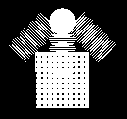
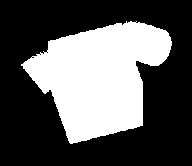
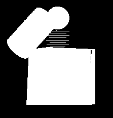

Summary of Work to Date:
Representation of the Unmanned Ground vehicle in terms of basic geometrics using sphere, cylinder has been achieved, however, there are some issues in the visibility of the modelled object which are to be dealt with before proceeding towards the next goal.Analysis of Work:
Basic object representation has been completed, but there are errors in the normal vector computation at different vertices of the polygon which would decide the visibility of the modelled object in openGL. Viewing the object from certain directions is fine as shown in the figures A and B. The distorted visibilty due to wrong normal vector computation is shown in figure C. I would be able to solve this problem within the next few days, .A) B) C)Figure A - View in the direction of 0.0,0.0,1.0 to 0.0,0.0,-1.0
Plan for Completion:
Goals: